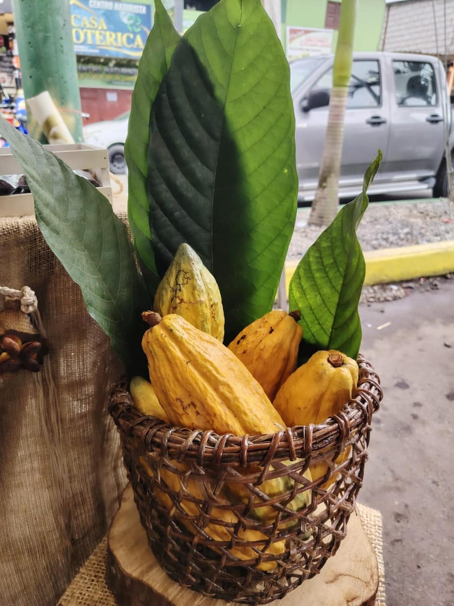
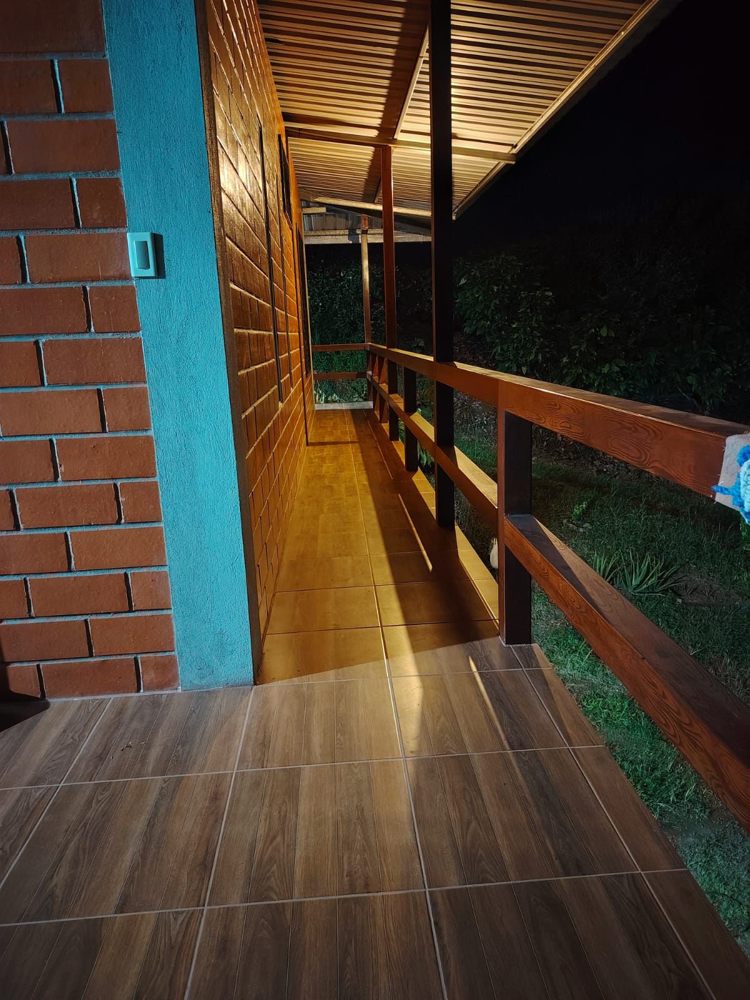

Prácticas profesionales en proyectos reales de desarrollo comunitario, turismo solidario, innovación y cooperación.
En Fundación Centro de Innovación y Desarrollo Comunitario Internacional (CIDCI) ofrecemos oportunidades para que estudiantes universitarios puedan realizar pasantías y prácticas profesionales participando en proyectos reales de desarrollo comunitario, turismo solidario, innovación y cooperación.
Los pasantes podrán aplicar los conocimientos adquiridos durante su formación académica y, al mismo tiempo, contribuir al desarrollo de comunidades. Tu experiencia puede transformar tu futuro.
Quiero realizar mi pasantía
Aprende haciendo, en el campoNuestro programa está dirigido a estudiantes universitarios nacionales y extranjeros de diferentes áreas académicas, entre ellas:
Y otras carreras relacionadas con nuestros proyectos.
Cada estudiante será incorporado a proyectos de acuerdo con su carrera, conocimientos e intereses, pudiendo participar en actividades como:
Apoyo en proyectos destinados a fortalecer las capacidades y oportunidades de las comunidades.
Diseño y apoyo de iniciativas turísticas que generen beneficios para las comunidades locales.
Soluciones digitales, páginas web, sistemas, capacitación tecnológica y proyectos de innovación.
Diseño y ejecución de talleres y actividades educativas.
Participación en proyectos de educación ambiental, conservación y sostenibilidad.
Apoyo a pequeños emprendimientos y proyectos productivos comunitarios.
Al finalizar satisfactoriamente su participación, el estudiante podrá recibir:
 Vive Ecuador desde adentro
Vive Ecuador desde adentro
¿Quieres vivir una experiencia profesional en Ecuador? CIDCI busca conectar universidades, estudiantes y comunidades, creando oportunidades para que estudiantes extranjeros puedan desarrollar sus prácticas en Ecuador mientras conocen nuestra cultura y participan en proyectos de impacto comunitario.
Solicitar información
🚀 ¿Lista tu próxima pasantía?